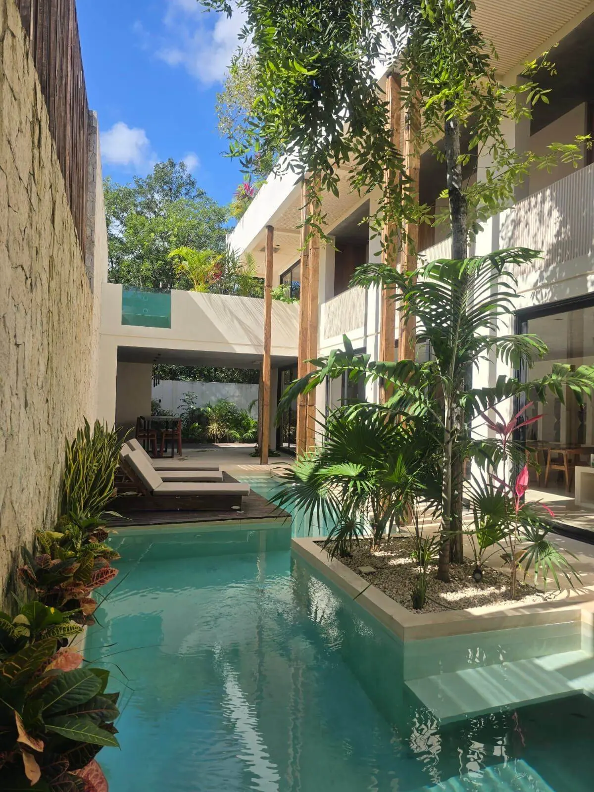

¿Cuánto Cuesta Construir en Puerto Cancún? (2026)
Una villa de 350 m² en Puerto Cancún cuesta aproximadamente $11.2M–$15.75M MXN ($622k–$875k USD) llave en mano en 2026. La dirección marca el nivel de acabados, pero la partida que más sorprende está bajo tierra: buena parte del desarrollo se construyó sobre relleno en la orilla de la laguna, y en la cimentación se gana o se pierde el presupuesto.

Servicio relacionado: Construcción de casas en Puerto Cancún
Qué hace distinto construir en Puerto Cancún
Puerto Cancún es un desarrollo con plan maestro entre el centro y la Zona Hotelera: campo de golf, marina con canales navegables, torres residenciales y un número limitado de lotes unifamiliares en las secciones de golf y canal. Tres cosas definen cualquier presupuesto aquí.
- El suelo. Gran parte del desarrollo está sobre relleno compactado encima de antiguo manglar y margen lagunar, con el nivel freático a menudo a uno o dos metros. El estudio de mecánica de suelos con sondeos es obligatorio; según el resultado la estructura va sobre losa de cimentación, zapatas profundas o pilotes. En una casa de 350 m² la diferencia entre opciones llega fácilmente a $600,000–$1.8M MXN.
- Revisión arquitectónica del plan maestro. El reglamento del desarrollador fija altura, remetimientos, cubiertas, paleta de fachada, paisajismo y bardas, y la obra se vigila: cuadrillas registradas, horarios, ventanas de entrega y un depósito contra daños en áreas comunes.
- Frente a canal o marina. Un lote en canal suma revisión del muro de contención, muelle privado y elevador de lancha si se desea, y los trámites ambientales de trabajar en la orilla.
Los permisos se tramitan en el municipio de Benito Juárez — uso de suelo, licencia de construcción y Director Responsable de Obra — con la aprobación del plan maestro antes de ingresar el expediente municipal.
Costo llave en mano por superficie
Rangos llave en mano con especificación de lujo para una villa en Puerto Cancún — estructura, instalaciones, acabados, exterior grado marino y paisajismo básico:
| Superficie | Llave en mano (MXN) | Llave en mano (USD) |
|---|---|---|
| 250 m² | $8.00M–$11.25M | $444k–$625k |
| 350 m² | $11.20M–$15.75M | $622k–$875k |
| 450 m² | $14.40M–$20.25M | $800k–$1125k |
| 600 m² | $19.20M–$27.00M | $1067k–$1500k |
Referencia: $32,000–$45,000 MXN/m², USD/MXN ≈ 18. No incluye terreno, alberca ni mobiliario.
Partidas que normalmente se cotizan aparte:
- Mecánica de suelos con sondeos: $45,000–$110,000 MXN
- Pilotes o cimentación profunda, si el estudio lo pide: $600,000–$1.8M
- Alberca infinita de 40–60 m² con cuarto de máquinas: $900,000–$2.2M
- Muelle, elevador de lancha y muro en lote de canal: $450,000–$1.5M
- Automatización completa, seguridad y red: $350,000–$1.2M
Programa y dónde se retrasan los proyectos
Considere 4–6 meses de diseño, revisión del plan maestro y licencia, y luego 12–18 meses de obra para una villa de 300–450 m². Los retrasos típicos son previsibles:
- Abatimiento del nivel freático. Las excavaciones de cisterna, foso de elevador y alberca requieren bombeo y temporada seca. Programe lo profundo entre noviembre y mayo.
- Ciclos de revisión. Cada ronda de comentarios del comité cuesta de dos a cuatro semanas. Entregue un paquete completo una sola vez, en anteproyecto.
- Acabados importados. Piedra de gran formato, herrajes europeos y sistemas de cancel tardan 10–16 semanas; pídalos contra el programa de estructura, no al final.
Exija precio alzado sobre un presupuesto por partidas, pagos por hitos contra avance verificado y reportes fotográficos semanales con fecha. En una obra de este tamaño, el procedimiento de cambios debe estar por escrito antes del primer pilote.
Preguntas Frecuentes
¿Listo para iniciar su proyecto?
196+ proyectos terminados. Contratos a precio fijo. Cotización en 48 horas.
Cotización gratuita